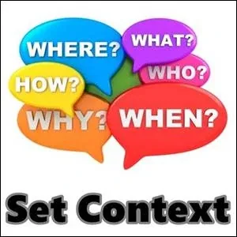
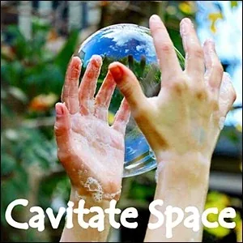
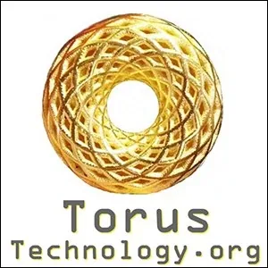
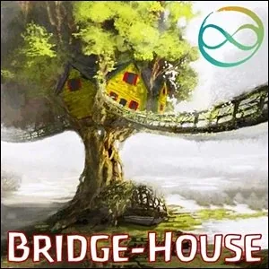
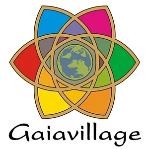

Experience Archiarchy on Strikingly
[
](http://archiarchy.mystrikingly.com/)
DISCOVERING ARCHIARCHAL CULTURES
'Archiarchy' is the culture that is spontaneously emerging around the world now that Matriarchy and Patriarchy have run their course.
Archiarchy is the culture where archetypally initiated adult women creatively collaborate with archetypally initiated adult men. This begins in Archiarchal Women's Culture and Archiarchal Men's Culture.
Archiarchy has never existed on Earth before. Its appearance has Gaia leaping up in the air and kicking her heals in delight!
The symbol representing Archiarchy is the infinite feminine 'everythingness' within the infinite masculine 'nothingness'. The symbol derives from the curious question: Which is bigger? Everything? Or Nothing?
Archiarchy thrives on unique processes that modern culture knows nothing about, including: nonmaterial value economics, nonhierarchical organizational structures, radically local authority, consciously established context, authentic adulthood initiatory processes, and cavitating new space.
These tantalizing new Possibilities await you on your Experiential journeys into Archiarchal Cultures.
[

](http://adulthood.mystrikingly.com/)
SENSING A LACK OF AUTHENTIC ADULTHOOD
Look around...
Where are your role models for Adulthood? Are these the people you truly admire and respect?
The Corporate CEOs? Politicians? Movie stars? Priests?
Those people who desperately do whatever it takes to climb to the top of hierarchical power structures... they are not our leaders. They are uninitiated adolescents, often with psychopathic social disorders. They are rolling Patriarchal systems forward as fast as they can to turn nature into imaginary profit... even as it exterminates life on Earth.
Fortunately... out here on the Edges... a new kind of Adulthood is emerging.
Here you can breathe.
Here you can Start Over.
Here you can get a glimpse of Archiarchy, over there, across the Bridge...
Yes... there are Bridges here. The Bridges are Women and Men who are Edgeworkers, laying down tracks to a new future for anyone tired of playing the stupid old games and ready to grow up now.
You take the Four Steps Across A Bridge to Archiarchy through Emotional Healing Processes (EHP) and Authentic Adulthood Initiatory Processes. This is how you take back your Center, your Authority, your Boundaries (archived — not captured), your Voice, your Sword Of Clarity, your Bright Principles, and eventually - if you Practice, if you gain Agency - your Archetypal Lineage.
[
](http://initiations.mystrikingly.com/)
DOING YOUR ADULTHOOD INITIATORY PROCESSES
Remember being around eighteen years old and having a deep sense that something big was about to happen to you... and it did not?
This is the sense that a butterfly would have if it could not engage its struggle to escape its chrysalis. It would be crazy-making.
For an uninitiated human being older than 18 years, it is also crazy-making.
Modern culture long ago banished Authentic Initiatory Processes into Adulthood, leaving modern citizens still stuck inside of our childhood and adolescent Survival Strategies... never to liberate our potentials, never to jack-in to our Inner and Outer Archetypal Resources.
During your visits to various Archiarchal projects, you will experience how Authentic Adulthood Initiatory Processes are of the highest value - the 'coin-of-the-realm'. Successful Initiations are what allows us to take our steps along our Adulthood Evolutionary Path.
By journeying from Bridge-House to Bridge-House, Gaiavillage to Gaiavillage, you will benefit from meeting Initiators who have dedicated their lives to providing 5-Body wake-up calls, Thoughtware Upgrades, Energetic Block Removals, nonlinear creation skills, and so on.
[
](http://s-h-i-t.mystrikingly.com/)
ESCAPING STANDARD HUMAN INTELLIGENCE THOUGHTWARE (S.H.I.T.)
Why do you believe what you believe?
Why do you think the way you think?
Why do some things matter to you, and others do not, even if what you are doing every day is not what really matters to you?
You are using Thoughtware to think with.
They do not teach you Thoughtware in school. You had to be able to think before they would let you in. So where did you get your Thoughtware?
Yes. From your parents.
And where did they get their Thoughtware?
You guessed it. From their parents.
The result is that you are using uninspected and very outdated Standard Human Intelligence Thoughtware (S.H.I.T.) that has been blindly handed down from generation to generation. Upgraded Thoughtware is available.
How often do you upgrade the APPs in your phone? How often have you upgraded the Thoughtware in your mind?
You wonder why you are creating the same old results in your life? Because you are using the same old Thoughtware.
Possibility Management is Thoughtware emerging from Radical Responsibility.
Possibility Management is Thoughtware for Archiarchy.
DOING YOUR EMOTIONAL HEALING PROCESSES
Archiarchy provides intelligent and effective ways for to do your Emotional Healing Processes (EHP) into Adulthood.
These Processes, Thoughtmaps, and Distinctions do not come from the Freudian-Jungian psychoanalytical Context. Neither do they come from Eastern Spiritual traditions or religious Beliefs. They come from the Context of Possibility.
How are you supposed to be 'you' enough to be Present with Reality, or intimate with another person if you are unconsciously afraid of being wrong, afraid of being seen, afraid of being judged...?
How can you be 'you' enough to make Commitments, takes steps along your Path? Cavitate, Inhabit, and Navigate new Spaces?
So much of what is Possible for you as an Adult is blocked off due to incomplete emotions and old decisions causing needlessly-festering wounds.
Since 1975, Archiarchal Teams have been researching and refining processes that switfly, respectfully, and safely deliver Emotional Healing Processes (EHP) needed to leave behind what no longer matters and face unknown opportunities are readily available, but,
No one can get healed for you.
More interestingly, no one can stop you from becoming healed.
No matter if your father never got healed, no matter if your mother is still trapped in her revengeful or scared, needy, and adaptive child Survival Strategy, no matter if you never saw anyone do it before, no matter if you don't know how... you can still arrange to do your Emotional Healing Processes that allow you to enter the astonishing and nutritious world of Authentic Adulthood.
[

](http://setcontext.mystrikingly.com/)
CONSCIOUSLY SETTING CONTEXT
Human interactions occur inside of consciously or unconsciously established and Navigated Spaces.
The Context of the Space determines what is Possible in that Space?
Does it work to play Rugby in the Post Office? No, it does not work. The Post Office Space does not support playing Rugby.
Does it work to Skateboard in the Opera Hall? No, it does not work. The Opera Hall is no place for Skateboarding.
Archans learn to consciously Cavitate, Inhabit, and Navigate Spaces Contexted in the Thoughtware, Distinctions, Processes, and Traditions of Archiarchy.
These are just a few among many fabulous Possibilitator Skills to learn and Practice during your visits to Archiarchy.
[

](http://archiarchaleconomics.mystrikingly.com/)
LEARNING NONMATERIAL VALUE ECONOMICS
Modern culture tries to get its citizens to value material objects with the highest degree of attraction and sparkle. Buying and disposing of material goods drives the engines of modern economics, rapidly stripping Earth bare of materials that are essential to the well-being of future generations. In the end all we leave behind are toxic wastes, contaminated ground-water, and trash-mountains of single-use 'disposables'.
What you will discover in Archiarchal Economics (archived — not captured) is how to center yourself around Nonmaterial Values. It is fascinating and deeply rewarding to experience that your innate capacity to Be Present and Be With are Valued beyond anything you possess (houses, cars, bank accounts, jewels, clothing, art, etc.), or anything you can do.
Huge Nonmaterial Value is created and delivered through Possibility Teams, Study Groups, S.P.A.R.K. Experiment Groups, WorkTalks, Workshops, Possibility Coaching (delivering Emotional Healing Processes (EHP)), Rage Clubs, Rage Club Spaceholder Training, Fear Club, Fear Club Spaceholder Training, Gremlin Transformation, Gremlin Transformer Training, Adult Egostate Decontaminations (archived — not captured), Decontaminator Training, Possibilitator Training... in other words, delivering your Possibilitator Training Specialty, your Archetypal Lineage. We are finding that it is straightforward for an Archan to deliver so much Value that it is not long before they don't have time to work anymore and they must quit their Corporate Job in order to live their life Full Out as a Free And Natural Adult!
[

](http://cavitatespace.mystrikingly.com/)
CONSCIOUSLY CREATING NEW SPACE
Look through any government tax forms and you can find a list of the Spaces in which you can live your life. You can be a programmer, a soldier, a manager, a shopkeeper, a truckdriver, a doctor, a lawyer, etc. Each has its own tax number, and there we stop thinking. Once you have an idea of what you are, this is the one right answer. No further thinking is needed...
In Archiarchy, you will discover that modern culture's list of professions is antique thoughtware, kind of a joke. Whole new categories of services and professions open up as an Archiarchal Village comes together with nothing at the center and with what is actually neeeded and wanted as the Necessity.
Here is where you can learn how to Cavitate New Spaces which are Contexted in just such a way as to create what is is needed, even if that Space has never existed before, even if no one knows how to do it. In Archiarchy it is clear that: "The Space determines what is possible."
The way to have a truly new Space to meet in, or work in, or play in (which in Archiarchy are all usually happening at the same time in the same place...) is to Cavitate the specifically Contexted Space yourself.
[

](http://torustechnology.mystrikingly.com/)
HOLDING SPACE FOR NONHIERARCHICAL MEETING PROCESSES
Once an Archan has Cavitated a Space, the way the people collaborate together in that Space is in a Circle, not using modern culture's Standard Human Intelligence Thoughtware formatted Hierarchical power structure.
However, since you were born and raised in a family, school, religion, university, military, government, corporations, and ALL of them use Hiararchical power structures, you will need to the learn new vocabulary, distinctions, processes, and procedures for meeting in a Toroidal Meeting Structures. (NOTE: a 'toroid' is simply a donut shape.)
You may even need the Archiarchy Phrase Book! And to study the Distinctionary!
Rather than using Robert's Rules of Order, Archiarchal meetings make use of Callahan's Rules of Chaos!
So many new avenues open up using Circular Meetings - called Torus Technology - plus new Tools and Processes, including the Purple Card, Frying Pan, Resistance Decision Making, the Infinity Ring, and so on.
When the Circle comes all together, it breathes in, called 'Convergence'. When the Circle spreads out and the various Nodes go handle what they need to handle and create, the Circle breathes out, called 'Divergence. The Torus is alive! And with it, your Archiarchal organization!

VISITING BRIDGE-HOUSES
A Bridge-House is a Team of like-minded individuals coming together to Experiment in synergetic education and temporary community. The first Bridge-House took place on a beach betwen Cabo San Lucas and San José del Cabo at the very southernmost tip of Baja California, Mexico, in 1975. Since then, a lot has been learned about Cavitating and Holding Space, building a Gameworld, Setting Context, calling in Bright Principles, the difference between Feelings and Emotions, how to Stellate Feelings Archetypes, how to navigate Emotional Healing Processes (EHP), how to Transform Gremlin, how to Decontaminate the Adult Egostate (archived — not captured) from Child Egostate, Parent Egostate, Gremlin Egostate, and Demon Egostate, running Toroidal Meetings, using conflicts and breakdowns for taking valuable step along your Transformational Path, and so on.
Today, Bridge-Houses are emerging around the world, often using the tools, thoughtmaps, distinctions, and processes of Possibility Management.
The Purpose of a Bridge-House is to Replace Itself, that is, to train Spaceholders for building more Bridge-Houses. So much is being learned, so many experiments are being tried, so many people are Healing From School and Escaping the 8 Prisons, so much High Level Fun is being co-created in life-long bonds from Bridge-Houses. Perhaps providing your Nonmaterial Value at a Bridge-House is your next step?
[

](http://nanonations.mystrikingly.com/)
VISITING NANONATIONS
The term 'nano' means 'one billionth'. A billionth of Earth's human population is 8 people.
A 'nanonation' is a nation of people consisting of approximately a billionth of the Earth's human population.
It is commonly thought that it is impossible to bring a new nation into existence because all the land on Earth has been claimed by the already existing nations. Guess who is promoting that old bit of thoughtware? Yes, the already existing nations...
The idea that a nation must be tied to a piece of land has already been proven to be false. If it were true, then the moment you stepped across an 'international boundary' they would be forced to give you a new passport. But they don't do that. This is because the land that you stand on does not determine the nation you are in. The nation you are in is determined by the passport you carry.
If you create a new passport for you and your friends, you create a new nation.
There is so much to learn from the many thousands of already existing new nanonations around the world. Some of them are land-based. Some of them are nomadic. Some of them are Archiarchal.
You could be living in a nomadic nanonation that uses a Constitution and a Context of your own design. Your first responsibility as a Free And Natural Adult is to Cavitate and Inhabit a culture that you would love to live in.
Your nanonation is already bigger than modern culture America!
[

](http://gaiavillage.mystrikingly.com/)
VISITING GAIAVILLAGES
Ecovillage Gameworlds have existed on Earth for more than 50 years.
An Ecovillage is an inhabited research center for regenerative community living.
In 1995, the Global Ecovillage Network was formed, promoting and supporting ecovillages around the world.
By now there are more than 10,000 ecovillages in the world, many with between 50-250 members, some over 1,000.
In 2022 a new form of regenerative community living is emerging called 'Gaiavillage'.
The difference between an 'Ecovillage' and a 'Gaiavillage' is that an Ecovillage might be contexted in the capitalist patriarchal empire models of modern culture, whereas a Gaiavillage has the kind of 'nothingness' at its center that supports the evolution of consciousness.
The connection between Gaia - the Being of Earth - and 'the evolution of consciousness' is that Gaia evolved the biological forms which are now sophisticated enough to become more and more self-aware and Radically Responsible. The members of a Gaiavillage hold the value of the evolution of consciousness as its 'coin-of-the-realm', and use tools, thoughtware, and processes that clarify, heal, and evolve human awareness and interactions. One example of thoughtware for Archiarchy is the collected tools, thoughtmaps, and processes of Possibility Management.
[
](http://globalhobo.com.au/hobo-basics)
ESCAPING FROM PATRIARCHY
The Patriarchy is disintegrating far faster than most people realize. Its infrastructure is failing. Its psychopaths are being removed from positions of power and being put in prison. You can step out of Patriarchy any time you Decide to.
Don't be left behind still playing in a stupid gameworld...
The Patriarchy does not exist everywhere.
For example, the Patriarchy does not exist right here, right NOW, in this extraordinary little Space.
This is good to know in case you are on the Path of escaping the 8 Prisons and taking steps to grow up.
One of the central Adulthood Initiatory Processes for escaping Patriarchy is to hit the road with almost nothing and explore for a while, far away from your birth culture.
Too often, people will pass off Travel with the excuse that they can’t afford it.
But you can afford it. You’ve just gotta be Willing to slum it every now and then, here and there, for a while.
Sure – you might have to spend a few nights a year sleeping on airport floors, in buses and under bridges. Your Box might be completely freaking out, but your Being will be in inexplicable ecstasy. Your shoes might be holier than the Pope. You may make some questionable life choices when it comes to finding uneaten food in a rubbish bin.
But some people are so poor that all they have is money.
Instead, you will have is a life so rich and bursting with tantalizing new experiences that you’ll forget why you ever wanted something so petty as a new car or a Fendi handbag.